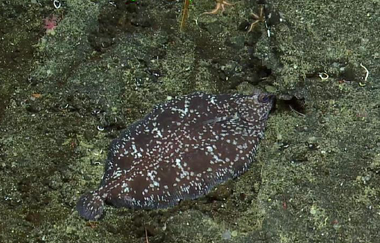
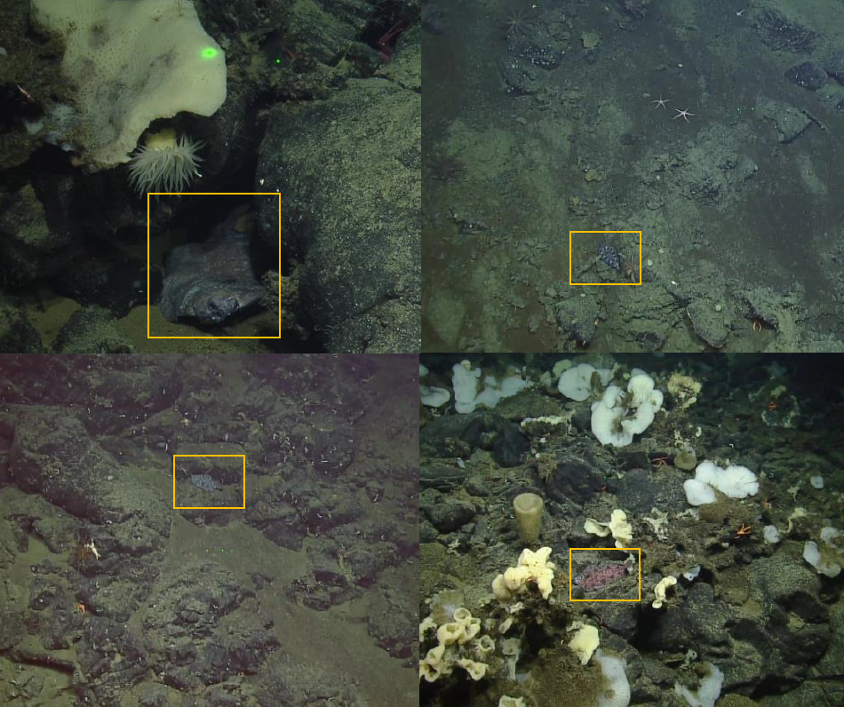
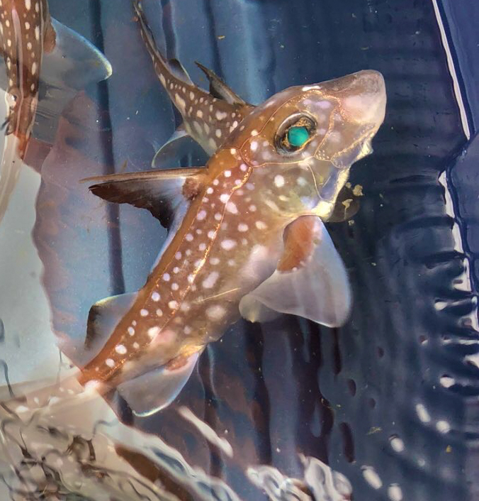

My research asks a fundamental question: how do we monitor and protect marine biodiversity in places that are logistically hard to reach? I work across deep-sea invertebrates and fish — corals, sponges, molluscs, flatfish — using trait-based and functional approaches to understand how these communities are structured and how they respond to a changing ocean.
Community structure and functional ecology of deep-sea invertebrates — including cold-water corals, sponges, and molluscs — on Northeast Pacific seamounts, Atlantic vent systems, and within marine protected areas.
Using species traits and functional diversity metrics to track ecological change, assess vulnerability, and develop monitoring frameworks that are scalable across data-poor deep-sea environments.
Fine-scale variability of benthic communities across seamount depth gradients. Patterns of occupancy, substrate associations, and implications for MPA design and adaptive management.
Developing practical monitoring frameworks for deep-sea MPAs that can adapt to changing ocean conditions. Linking functional ecology to policy-relevant indicators and management outcomes.
Trait-based vulnerability assessment for molluscan and invertebrate communities. Integrating species traits with environmental stressors to predict sensitivity to climate change and human impacts.
Distribution and substrate preferences of deepsea sole on Northeast Pacific seamounts; locomotor kinematics of the spotted ratfish. Integrating fish ecology into broader deep-sea community assessments.
Changing ocean conditions are disrupting marine ecosystems and posing serious challenges for managing biodiversity in remote, offshore MPAs. My thesis evaluated two approaches for assessing and monitoring species in these environments — where logistical constraints are immense and long-term ecological change is hard to detect.
Chapter 1 — Functional group monitoring, Northeast Pacific. Using ROV transect data from Fisheries and Oceans Canada, I analysed inter- and intra-seamount variability in depth-occupancy patterns of cold-water corals and sponges within the SG̲áan K̲ínghlas-Bowie and Tang.ɢ̱wan–ḥačxwiqak–Tsig̱is MPAs. Functional groups capture broad distribution patterns well, but species-level assessments remain necessary for detecting finer ecological change — an important nuance for MPA monitoring design.
Chapter 2 — Trait-based vulnerability framework, Azores. Using molluscs in the Azores Marine Park as a case study, I built a species-level vulnerability framework integrating functional traits with oceanographic models to quantify exposure, sensitivity, and adaptive capacity to ocean acidification and warming. Bivalves in northern MPAs emerged as particularly vulnerable due to high sensitivity and low adaptive capacity; cephalopods showed considerably greater resilience.
ROV imagery © Northeast Pacific Seamount Expedition Partners
My honours project investigated the distribution and substrate preferences of deepsea sole (Embassichthys bathybius) on six rocky Northeast Pacific seamounts, using ROV image data annotated in BIIGLE 2.0.
Conventional wisdom held that flatfish prefer sandy substrates. Testing this on seamounts, I found the opposite: a significant bias toward complex substrate (69% of cases despite only 55% availability), with a 2:1 preference in mixed areas. Fish size related significantly to depth, temperature, and dissolved oxygen — patterns consistent with ontogenetic vertical migration and suggesting seamount pinnacles serve as important juvenile nursery grounds.


Embassichthys bathybius on Northeast Pacific seamounts
As part of the Biology of Marine Fishes course at Bamfield Marine Sciences Centre, I conducted a study on the locomotor kinematics of the spotted ratfish, with a focus on pectoral fin movement and the implications of body size on swimming mechanics.
Smaller individuals swam faster relative to body length — consistent with ontogenetic shifts in locomotive strategy. Body drag increased with body mass, but pectoral fin drag did not, suggesting ratfish use a more complex thrust strategy than previously anticipated — possibly exploiting the hydrodynamic ground effect near the seafloor.

Three expeditions, 10+ weeks at sea, a sub dive past 2,000 metres, and three newly discovered hydrothermal vent sites. See where the data comes from.
See the Expeditions Get in Touch